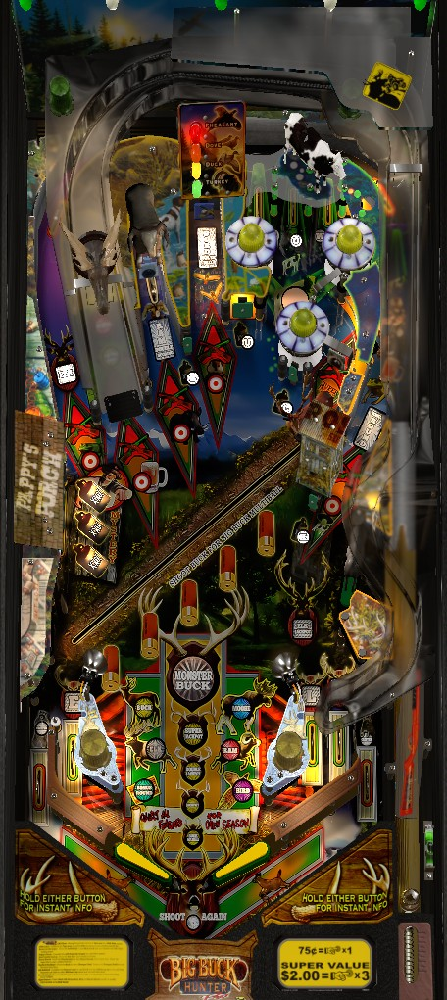

The "Pro" at the end of this game's title refers to the video game the machine is based on, not the model type, as would be the case for future Stern Pinball games. There is no such thing as Big Buck Hunter Premium.
The most straightforward ways to big points are the Bird and Buck Multiballs. To play a Bird Multiball, shoot the center lane labelled Bird repeatedly to start, then shoot flashing shots for jackpots. After making enough jackpots, shoot the Bird lane twice more for a super and double super jackpot. For Buck Multiball, hit the deer toy in all 5 positions during single-ball play to start multiball, then hit the deer more to score jackpots and light shots for double jackpots. Shooting the Ram near the left ramp three times starts 20 seconds of 2x playfield scoring whenever you want.
The below picture of Big Buck Hunter Pro's playfield was taken from the VPX recreation by 32assassin et al.

A plunged ball goes to the top lanes, of which one is flashing. Flipper lane change is available for moving which lane is flashing. Make the flashing lane for a skill shot worth 250,000 points the first time, increasing by 25,000 each subsequent time it is made. Skill shots are only available at the start of a ball.
Make an unlight or flashing top lane to light it. Lighting all 3 top lanes will reset them, score 10,000 points, and add 1 to the bonus multiplier up to a maximum of 25x. There is no extra bonus for completing the top lanes when the bonus multiplier is already maxed out.
The lane just to the right of the left ramp has an insert labelled Ram Double Scoring. Shooting this lane adds a letter to the word Ram. The target at the end of the Ram lane is actually a kicker which fires the ball back at the flippers very quickly, behaving similarly to the War Machine kicker on Iron Man. Spelling Ram starts 2x playfield scoring for 20 seconds, and also lights the Ram insert near the flippers, which is one of the requirements for qualifying Open Season wizard mode. Your progress toward the 2x playfield is only shown on the DMD, not on the playfield. 2x scoring can be activated at basically any time, and applies to anything in the game, except for Open Season wizard mode. The best time to use the 2x playfield scoring is during multiballs, specifically immediately before scoring any of the game's various super jackpots.
Shoot the target in the center lane to earn progress toward Bird Multiballs. It takes 4 shots to this lane to start the first Bird Multiball, increasing by 1 each time up to 7 for the 4th Bird Multiball. After any shot to the center lane, a small post pops up, holding the ball briefly. Watch closely when the post falls to know which flipper the ball will fall towards; it should, but does not always, go toward the tip of the right flipper. The four Bird Multiballs are named Duck, Dove, Turkey, and Pheasant Multiball, but they are played in random order; the rules depend on how many Bird Multiballs you have played, not specifically which one is active. Bird Multiballs have two phases.
In phase 1, 2 more balls are plunged to the playfield. A 15 second timer begins, and the jackpot value starts at 200,000 points. While the timer is counting down, any switch hit during the game adds 1,000 to the jackpot. Once this phase completes, there is no way to raise the value of a normal jackpot further.
In phase 2, the first priority is to score 5 jackpots. These can be made at any arrow shot: either orbit, the ramp, the Ram kicker, or the center Bird lane. Once 5 jackpots are made, shoot the Bird lane for a super jackpot worth 2,000,000 points, which traps the shot ball. Collecting the super jackpot starts a 15 second timer where hitting the trapped ball scores a double super jackpot. When the double super jackpot is collected or times out, phase 2 restarts, with the super jackpot increased by 125,000. After collecting at least one super jackpot, arrow shots will unlight after they are made. This means you need to earn your first 5 jackpots as one from each arrow shot (including the Bird lane), then the super jackpot and double super jackpot are at the Bird lane. The double super jackpot can be multiplied into a 4x super jackpot worth a minimum of 8,000,000 points if it is collected while Ram Double Scoring is running. Phase 2 repeats itself until there is just one ball left on the playfield.
Playing all 4 Bird Multiballs is one of the requirements for qualifying Open Season wizard mode.
Big Buck Multiball involves the deer toy, the main dynamic feature on the playfield. To play Big Buck Multiball, you must collect 5 cartridges by shooting the Buck toy in each of the five positions along the track. The deer toy will pop out on its own every once in a while, but you can also shoot the deer toy in its hiding place in the upper right to make it pop out. The more Buck Multiballs you have played, the less time the deer toy will stay in one of the 5 cartridge positions before retreating to its hiding spot. 3-ball multiball begins as soon as you collect the 5th cartridge.
At the start of the game, the Big Buck Multiball jackpot starts at 150,000 points. It can be increased by 25,000 at any time by hitting green standup targets to spell the word Buck. These four green standup targets are located on either side of the Bird lane, and on either side of the deer's hiding place. Like the Bird Multiballs, Big Buck Multiball has multiple phases.
The 5 inserts in a vertical lane going up from between the flippers indicate the furthest progress you've made in any single Big Buck Multiball so far. If you play Big Buck Multiball several times, your progress does NOT carry over; you must start from scratch each time to reach Monster Buck. Lighting the Monster Buck insert is one of the requirements for qualifying Open Season wizard mode.
There are 2 ways to earn letters in Elk: shoot the left orbit, or make an unlit in lane. Flipper lane change is not available on the in lanes, so you may need to use left orbit shots to spot Elk letters, especially the E and L. Spelling Elk starts Elk Hurry-up on the left orbit. The first Elk Hurry-up starts at 300,000 points and counts down to 100,000 over about 20 seconds before timing out. Making an Elk in lane while the hurry-up is running pauses the countdown and adds 50,000 to the remaining total. Collecting this one Elk Hurry-up starts the first Elk Multiball.
After Elk Multiball has been played once, you must spell Elk twice to start the hurry-up round, and you must collect two consecutive hurry-ups- with the first starting at 350,000, and the second starting at 400,000- to play the second Elk Multiball. The third Elk Multiball requires 3 spellings of Elk, then three consecutive hurry-ups starting at 400,000, 450,000, and 500,000. This pattern continues the more times Elk Multiball is played.
Elk Multiball is a 2-ball multiball. The jackpot value at the start of multiball is equal to the final hurry-up value you collected to qualify this multiball. A large, flipper-like diverter will open on the right side of the game. You can do two things with this: shoot it from below to close it and score a jackpot, or shoot the left orbit to have the open diverter put the ball back into the shooter lane. If you take the latter option, the redirected ball will be auto-plunged back onto the playfield, and all Elk Multiball scoring will be doubled for 5 seconds. Making any in lane during Elk Multiball scores 50,000 points and adds 10,000 to the jackpot. If Elk Multiball double scoring is running, the direct value of an in lane is increased to 100,000, but it will also raise the jackpot by 20,000 as well. (By contrast, if Ram Double Scoring is running, in lanes score 100,000 directly but only add 10,000 to the jackpot.) The Elk Jackpot maxes out at 750,000. Both Ram Double Scoring and Elk Multiball's double scoring can run at the same time. If you have closed the Elk diverter by shooting it from below, there are two ways to reopen it: shoot the left orbit (which scores a jackpot if the diverter is closed, then reopens it), or make any in lane. These rules continue until there is only one ball in play.
Starting an Elk Multiball is one of the requirements for qualifying Open Season wizard mode.
Shots to the left ramp in single-ball play award letters in Moose. Spelling Moose lights the Moose insert near the flippers (which is one of the requirements for Open Season wizard mode) and starts Moose on the Loose. This is a 25-second mode where shots to lit arrows start at 200,000 points, increasing by 100,000 each time up to a maximum of 1,000,000.
For the first Moose on the Loose, only the left ramp will ever be lit.
For the second Moose on the Loose, you'll need to shoot the left orbit once and the left ramp once. After making both, you can shoot the left ramp repeatedly.
For the third, you'll need to shoot the left orbit, left ramp, and Ram kicker once each before being able to whale on the ramp.
This pattern continues for the 4th and 5th Moose on the Loose modes. For all Moose modes starting with the 5th, you need to make all 5 major arrow shots at the orbits, ramp, Ram kicker, and Bird lane, before being able to shoot the ramp repeatedly. Moose on the Loose never gets harder to start after the first time, and also never increases in value beyond 200,000 +100,000 per shot.
Pop bumpers start each ball scoring 3,000 points each. Right orbit shots in single ball play and some mystery awards add 1,000 to the value of each pop bumper, up to 10,000 per pop.
Hitting enough pop bumpers lights the right orbit for Bonus Round. The first Bonus Round requires 25 bumpers, the second requires 30, and all Bonus Rounds after that seem to require 35. To start a Bonus Round, shoot the right orbit when it is ready. When a Bonus Round is ready, the Bonus Round inserts in the right orbit will be lit, and flashes in short bursts every few seconds. The number of flashes in each burst indicates which of the 6 Bonus Rounds is currently qualified, as depicted below. Hitting pop bumpers changes which round is qualified. Most Bonus Rounds use the "bullseye shots", which are located in the same places as arrows: both orbits, the ramp, the Ram kicker, and the center lane.
Playing any three Bonus Rounds is one of the requirements for qualifying Open Season wizard mode. It appears to be the case that a Bonus Round cannot be replayed until all 6 have been played.
To qualify Open Season wizard mode, you must complete all 11 of the tasks indicated by the inserts near the flippers.
Remember that the last 5 inserts listed here, which all pertain to Big Buck Multiball, must all be collected within the same Big Buck Multiball.
With all 11 features complete, shoot the Bird lane to start Open Season wizard mode. This is a 90-second long 4-ball multiball with unlimited ball save. Conflicting DMD animations make some of the rules unclear, but it appears that the goal is shoot the Deer, Elk, Moose, Ram, and Bird 5 times each to qualify a "monster" of that animal. Each shot to one of these animals scores 500,000 points (except Moose, which is 250,000). After completing an animal, super jackpot is lit at the spinner behind the deer blind, and any further shots to that animal score 1,000,000 points. The super jackpot, collected at the spinner, appears to be calculated as 25,000 points per switch hit anywhere in the game since the last super jackpot was collected, possibly plus a bonus for the value of the animal that was completed to light that super jackpot. When the 90 seconds expires, all balls are allowed to drain, and the 11 task inserts are completely reset before the current player continues their turn.
Hit a flashing Pappy's Porch target to light it solidly. Lighting all 3 targets resets them and gives a mystery award. These mystery awards can be earned at basically any time, including during Bonus Rounds and multiballs. Possible rewards include:
This list may not be exhaustive.
Shooting the spinner when it is not lit for any kind of super jackpot or other award scores 10,000 points per spin, lights one Critter, and adds 10,000 per spin to the Critter value. Critter is located on the out lanes as a "big points" award for a draining ball. If only one out lane is lit, slingshots alternate which one is lit; it is possible for both to be lit at the same time. Critter starts at 200,000 points, maxes out at 1,000,000, and resets when collected. Scoring a Critter award also unlights that out lane.
Big Buck Hunter has a conventional in/out lane setup, but with two in lanes on the right instead of one. Out lanes are lit for Critter as described above. In lanes correspond to the letters in Elk, and are lit by rolling through the lane or shooting the left orbit- no lane change. There is no kickback, center post, or other save feature.
The base bonus on any given ball is 125,000 points times the number of balls played so far, plus the following scores for animals hit throughout the game:
...all multiplied by the bonus multiplier, which can be as high as 25x, and is increased by completing the top lanes or as a Pappy's mystery award. There does not seem to be any way to hold the bonus multiplier from ball to ball or collect the bonus mid-ball.
| If you need... | Try... |
| 500,000 points | ...starting Moose on the Loose, starting a Bird Multiball, or collect an Elk Hurry-up. |
| 1,000,000 points | ...earning a couple Bird Multiball or Big Buck Multiball jackpots. |
| 3,000,000 points | ...collecting a Bird Multiball super jackpot or playing a Bonus Round. |
| 10,000,000 points | ...collecting a Big Buck Multiball super jackpot or a Bird Multiball double super jackpot. |
| 50,000,000 points or more | ...stacking Big Buck Multiball and Bird Multiball, and playing both as much as possible. Use Ram Double Scoring to multiply any super jackpots that are available to you. While Open Season is very valuable, it's not worth going out of your way to play it to make up score unless you've already managed to light Monster Buck and play all 4 Bird Multiballs before getting to where you are now. |